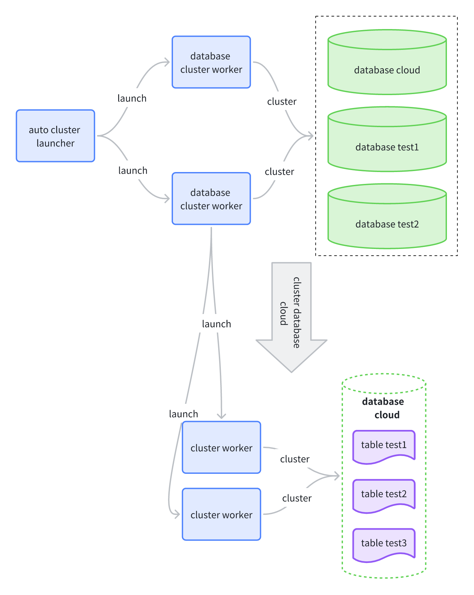

Auto-Clustering Tables
The CLUSTER statement physically reorders data in a table based on a specified index. This sorted data can greatly reduce the scan range during queries, thereby improving query performance. However, physical reordering is a one-time operation. As the table data is updated, its physical order gradually degrades, requiring a database administrator to manually execute the CLUSTER command to re-optimize it.
To reduce manual maintenance, SynxDB Elastic provides an auto-clustering feature that automatically reorders tables physically. This feature is enabled by default and uses a background service to periodically and automatically perform incremental CLUSTER operations on tables that require physical reordering, thus continuously maintaining an efficient physical data layout.
User value
You will mainly notice its presence and value in the following ways:
Improved query performance: If a query’s filter conditions can utilize the cluster key, the amount of data scanned is greatly reduced, leading to a notable increase in query speed.
Non-blocking write operations: The background reordering task runs concurrently with foreground write operations like
INSERTandCOPY, ensuring that they do not block each other and maintaining business continuity.Background resource consumption: Auto-clustering consumes a certain amount of CPU, memory, and I/O. You can observe periodic resource usage peaks in the system through monitoring tools. The intensity and frequency of these peaks can be adjusted using global parameters.
Detailed logging: The database log records details of each reordering operation (such as the table operated on, time taken, and amount of data processed), providing a basis for performance evaluation and troubleshooting.
How to use
In most cases, you only need to define a cluster key for your table. You can also adjust or disable the feature using GUC parameters.
Step 1: Define a cluster key for the table
You need to explicitly specify the columns to be used for physical reordering (the cluster key) when creating (CREATE TABLE) or altering (ALTER TABLE) a table. The auto-clustering service only affects tables with an explicitly defined cluster key. If a table does not have a cluster key defined, the service will ignore the table.
How to choose a cluster key
It is recommended to choose the most frequently used filter columns as the cluster key, based on your business query patterns. For example, columns that often appear in WHERE clauses or JOIN conditions, such as date columns or region ID columns.
-- Example: Creates a table that is physically reordered by columns c1 and c2.
-- This table will be managed by the auto-clustering service.
CREATE TABLE my_table (
c1 INT,
c2 INT,
c3 VARCHAR(50)
) WITH (cluster_columns = 'c1, c2');
Step 2: Adjust global configuration parameters
Database administrators can adjust the overall behavior of auto-clustering by setting the following GUC parameters to balance performance optimization effects with system resource consumption.
Parameter name |
Description |
Default value |
|---|---|---|
|
(Master switch) Controls whether to enable the auto-clustering feature. |
|
|
The scheduling interval for the background service to check tables. |
|
|
The threshold for the number of incremental data files that triggers a reordering operation on a table. |
|
|
The maximum number of databases for which reordering tasks can be executed in parallel. |
|
|
The maximum number of tables within a single database for which reordering operations can be performed in parallel. |
|
These parameters can be set at the session or system level:
-- Disables the auto-clustering feature at the system level.
ALTER SYSTEM SET cloud.enable_auto_cluster = OFF;
-- Adjusts the number of worker processes for parallel table processing.
SET cloud.max_table_cluster_workers = 4;
-- Adjusts the incremental file threshold for triggering physical reordering.
SET cloud.num_cluster_data_files = 20;
How it works
The workflow of the auto-clustering feature is shown in the diagram below.

The core components of this process include:
auto cluster launcher: Wakes up periodically according to the interval set by
cloud.cluster_worker_launch_intervaland is responsible for starting worker processes for databases.database cluster worker: The maximum number of these workers is controlled by
cloud.max_database_cluster_workers. It scans all tables with a defined cluster key within a single database and sorts them based on the number of incremental data files, prioritizing tables with the most incremental files.cluster worker (for tables): The maximum number of these workers is controlled by
cloud.max_table_cluster_workers. When the number of a table’s incremental data files exceeds thecloud.num_cluster_data_filesthreshold, this process executes aCLUSTERoperation on the table.